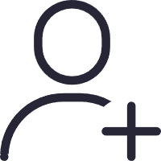

fant1650
将进酒赏析
君不见，黄河之水天上来，奔流到海不复回 李白在《将进酒》一诗中表达了对怀才不遇的感叹，又抱着乐观、通达的情怀，也流露了人生几何当及时行乐的消极情绪。但全诗洋溢着豪情逸兴，取得出色的艺术成就。《将进酒》即其代表作。 李白咏酒的诗篇极能表现他的个性，本诗为长安放还以后所作，思想内容更为深沉，艺术表现更为成熟。诗由黄河起兴，感情发展也像黄河之水那样奔腾激荡，不易把握。而通篇都讲饮酒，字面上诗人是在宣扬纵酒行乐，而且诗中用欣赏肯定的态度，用豪迈的气势来写饮酒，把它写得很壮美，也确实有某种消极作用，不过反映了诗人当时找不到对抗黑暗势力的有效武器。酒是他个人反抗的兴奋剂，有了酒，像是有了千军万马的力量，但酒，也是他的精神麻醉剂，使他在沉湎中不能做正面的反抗，这些都表现了时代和阶级的局限。理想的破灭是黑暗的社会造成的，诗人无力改变，于是把冲天的激愤之情化做豪放的行乐之举，发泄不满，排遣忧愁，反抗现实。
3k
创作者信息
 用户ID: 123
用户ID: 123发文数量: 3
社区贡献: 100
关注他了解更多信息

评论
这是一条评论内容。